Present in eukaryotic cells
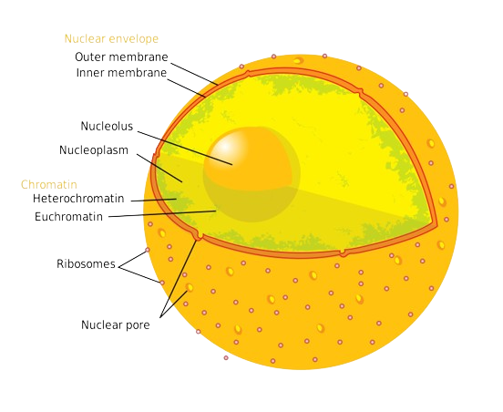
The Nucleus |
| Nucleus contains most of the cell's DNA. |
DNA |
| An informational molecule that specifies the "recipe" for every protein a cell can make. The cell copies the genes encoding these proteins into another nucleic acid, messenger RNA (mRNA). |
Nucleolus |
| A dense sopt that assembles the components of ribosomes. These ribosomes leave the nucleus through the nuclear pores and they come together in the cytoplasm to form complete ribosomes. |
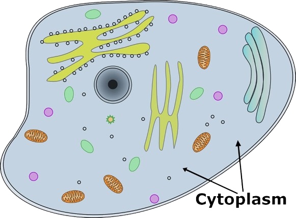
Cytoplasm |
| The remainder of the cell, between the nucleus and the cell membrane. |
Cytosol |
| A watery mixture of ions, enzymes, RNA, and other dissolved substances. |
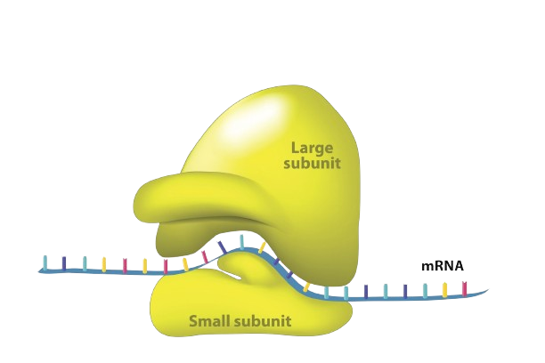
Ribosomes |
| Ribosomes manufactures protein. It is classified into two: |
A. Free Ribosomes |
| Suspended in cytoplasm; produces proteins for use inside the cell. |
B. Bound Ribosomes |
| Attached to the outside of ER or nuclear envelope, destined for cell membrane or secretion. |
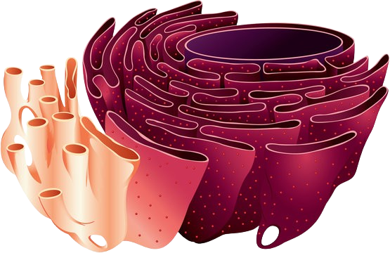
Endoplasmic Reticulum (ER) |
A network of sacs and tubules (cisternae) composed of membranes, originates at the nuclear envelope and winds throughout the cell.
- Endoplasmic - "within the cytoplasm"
- Reticulum - "little net" |
Smooth Endoplasmic Reticulum |
| - lacks ribosomes |
Rough Endoplasmic Reticulum |
| - roughened appearance |
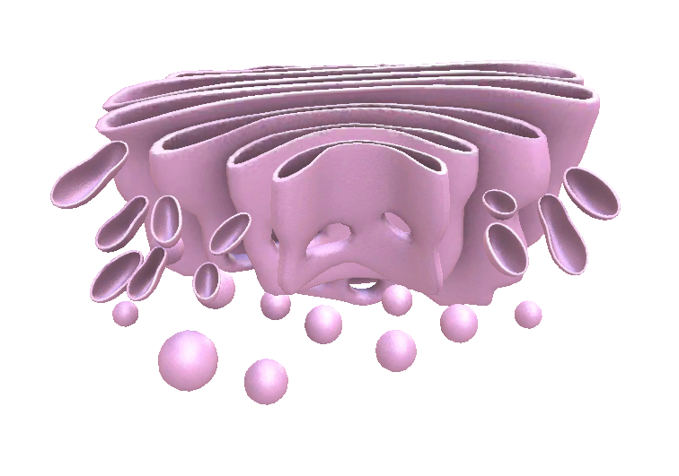
Golgi Apparatus |
| A group of associated, flattened membranous sac---cisternae |
| A processing center; warehouse for receiving, sorting, shipping, and manufacturing. |
| It is where proteins complete their intricate folding and become functional. |
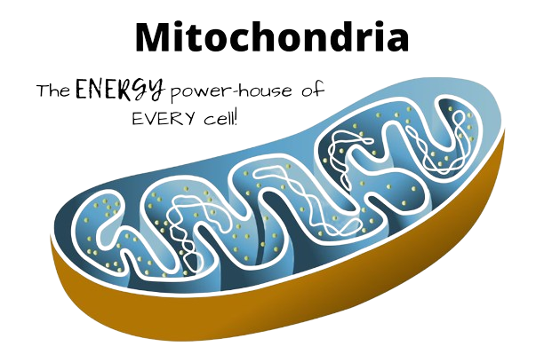
Mitochondria |
| Sites of cellular respiration (uses oxygen to generate ATP from sugars). |
| Composed of two membrane layers: outer membrane and intricately folded inner membrane enclosing the mitochondrial matrix |
Cristae - folds the inner membrane
Cristae adds tremendous surface area to the inner membrane, which houses the enzymes that catalyze the reactions of cellular respiration. |
| Mitochodrial DNA - useful in tracking inheritance through female lines in the family. |
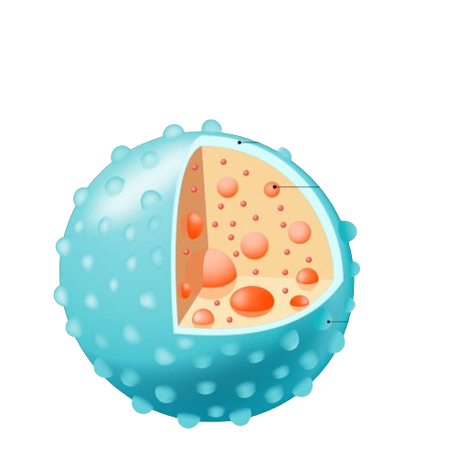
Lysosome |
| Membranous sac of hydrolytic enzymes that dismantle and recycle food particles, captured bacteria, worn-out organelles and debris. |
| So named because their enzymes lyse or cut apart, their substrates. |
| Hydrolytic enzymes and lysosomal membranes are made in the rough endoplasmic reticulum (ER). |
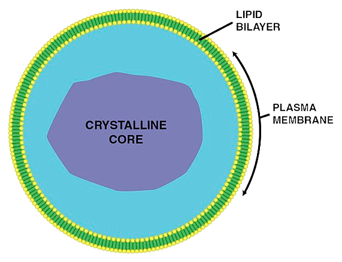
Peroxisomes |
| All eukaryotic cells contain peroxisomes, a specialized metabolic compartment. |
| Contain enzymes that remove hydrogen atoms from various substrates and transfer them to oxygen. |
| Produces hydrogen peroxide as by-product. |
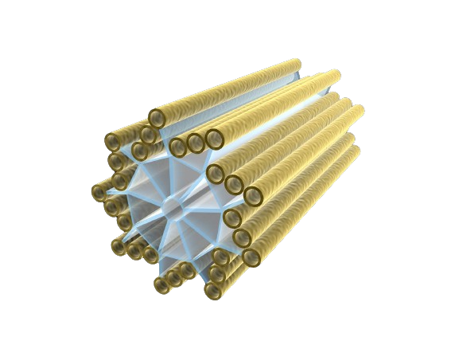
Centrosome |
| Structures in animal cells that organize the microtubules. |
| Containes two centrioles - indirectly produce the extensions that enable some cells to move: cilia and flagella. |
Present only in Plant cells
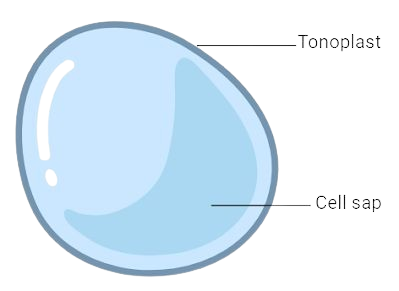
Vacuole |
| In mature plant cells, the large central vacuole containes water solution of enzymes that degrade and recycle molecules and organelles. |
| Other roles: Growth of the plant cell comes from an increase in the volume of its vacuole (occupies up the 90% of the cell's volume). |
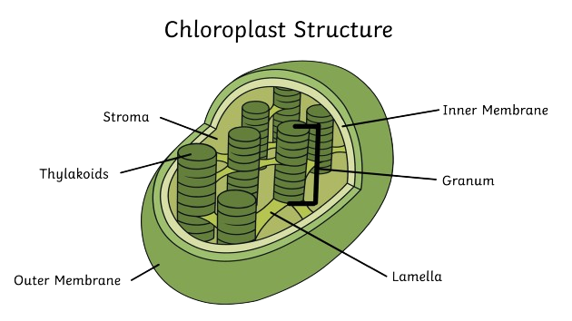
Chloroplast |
| Contains multiple membrane layers: Two membrane layers (enclose an enzyme-rich fluid called stroma.) |
| Within stroma - thylakoids - third membrane system folded into flattened sacs; stacked like poker chips to form structures called granum. |
| Thylakoid membranes - where photosynthetic pigments such as chloropyll are embedded. |

Cell Wall |
| Cell walls surround the cell membrane of nearly all bacteria, archea, fungi, algae and plants. |
| Cell wall impart shape, regulate cell volume and prevent bursting when a cell takes in too much water. |
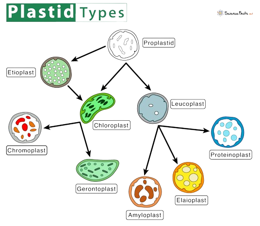
Plastids |
| Plastids are larger category of plant organelles. |
| Some plastids synthesize lipid-soluble red, orange, and yellow carotenoid pigments (e.g. carrots and ripe tomatoes.) |
| Plastids that assemble starch molecules - important in cells specialized for food storage (such as those in potatoes and corn kernels). |
Mitochodria and Chloroplast: A Comparison
| Mitochodria | Chloroplast |
| Contain DNA and ribosomes? | Yes | Yes |
| Inner fluid | Matrix | Stroma |
| Internal Membrane Structures | Cristae | Thylakoids |
| Function | Produce ATP (cellular respiration) | Produce sugars (photosynthesis) |
| Location | Nearly all eukaryotic cells | eukaryotic cells that carry out photosynthesis |